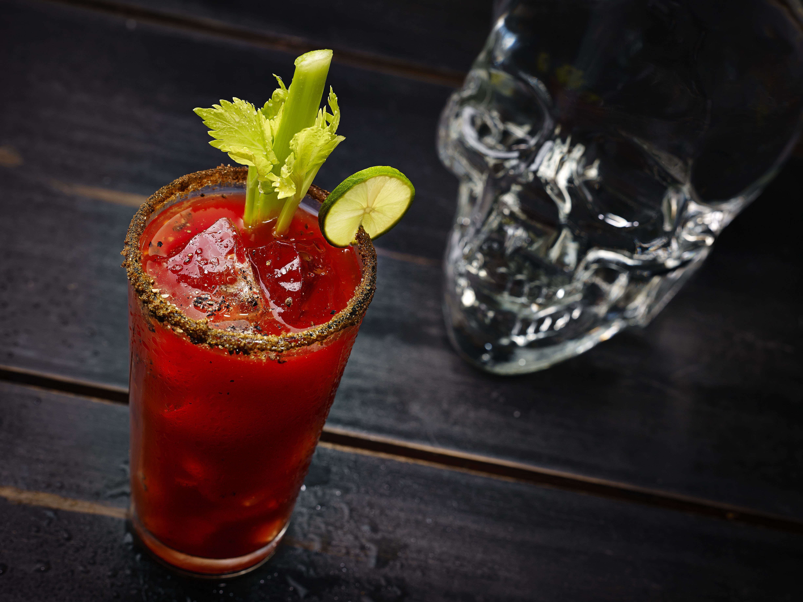

Bloody Mary

El Bloody Mary es un cóctel de fama internacional. Una de las teorías más extendidas dice que su creación se debe a Fernand Petiot, que preparó por primera vez esta bebida en el año 1921, en el bar Nueva York de París. Su nombre podría hacer referencia a la reina María I de Inglaterra, que recibió tan singular apelativo tras ordenar una cruel persecución contra los protestantes en el siglo XVI.
El Bloody Mary auténtico lleva “Worcestershire Sauce”, una salsa típica de Inglaterra con un sabor avinagrado que está de muerte. Se puede comprar en España en las secciones de comida Británica de grandes supermercados pero también podéis hacer el cóctel sin ella y tampoco cambiará demasiado el resultado.
Elaboración
Ingredientes:
- 3 partes de Vodka
- 6 partes de zumo de tomate
- Una pizca de sal y pimienta negra
- 3 gotas de salsa Worcestershire o salsa inglesa
- 3 gotas de salsa Tabasco
- 10ml de zumo de limón o de lima.
- Tallo de apio y gajo de limón para decorar (opcional)
Pasos
- Echa bastantes cubitos de hielo enteros en un vaso grande.
- Añade el vodka (para un vaso grande aproximadamente 50ml o un vaso de chupito), la salsa Worcestershire, el Tabasco y el zumo de limón.
- Rellena con Zumo de tomate hasta el borde.
- Mezcla bien todo y aliña al gusto con sal y pimienta.
- Decora con un tallo de apio y un trozo de limón.